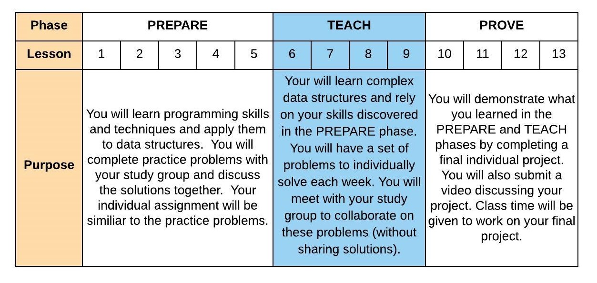

07 Prepare: Linked Lists
Overview
This week you will learn about Linked Lists. You are still in the TEACH phase of the course:
Here is the two day plan for this lesson:
Day 1 - Complete the reading below. The reading should take 1 hour to complete. For on-campus students, class time will be used to discuss the reading and explore examples. Online students should spend an additional hour communicating with other students in Slack and reviewing any examples or information provided by your instructor. You should begin independently to work on 07-Prove. You should plan on the assignment taking 3 hours to complete.
Day 2 - You will work with your study group to complete 07-Teach which will involve colloborating together on 07-Prove which you will need to finish on your own. On-campus students will complete this activity during class time. You should come prepared to the activity by starting or completing several of the problems in the individual Prove assignment. The activity should take 1 hour to complete.
The Linked List Data Structure
TBD